Mini-GPT · LLM fine-tuning · Project case study
Fine-tuning with
LoRA & RLHF
Teaching language models to generate movie reviews and answer programming questions, with GPU memory as a design constraint.
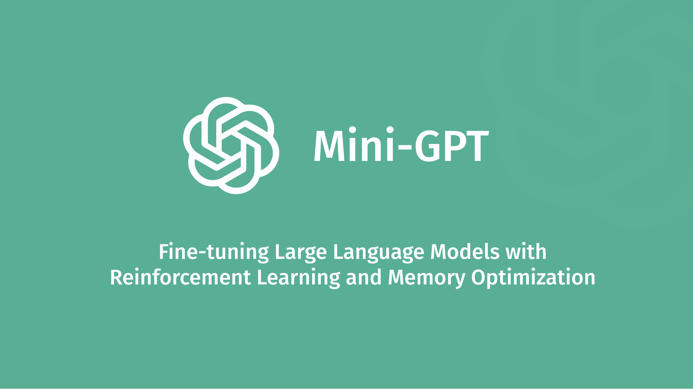
the project dataset
model explored
for the experiments
programming Q&A
The challenge
Adapt the behaviour. Work within the hardware.
Our team explored how far we could adapt open language models with limited GPU memory. We combined low-rank adaptation (LoRA) with reinforcement learning from human feedback (RLHF), using movie-review sentiment as a concrete training objective.
Generate movie reviews
Adapt GPT-NeoX and Pythia models to IMDb text, then use a sentiment reward model and proximal policy optimization (PPO) to encourage more positive continuations.
Fine-tuning + PPO experimentsAnswer programming questions
Explore LLaMA and Vicuna for Stack Overflow Q&A. Evaluate task adaptation while investigating how to reward answer quality beyond surface-level language.
Fine-tuning + reward-model explorationThe approach
From pretrained weights to task-specific generation.
The movie-review workflow separates learning the writing task from optimizing its sentiment. Each stage has a different purpose.
- Adapt
Fine-tune with LoRA
Load the base model in 8-bit precision, freeze its pretrained weights, and train small adapter matrices on review text.
Task-adapted language model - Evaluate
Score generated reviews
Generate continuations from review prompts. A sentiment model assigns the reward used to guide the next training stage.
Reward for each continuation - Optimize
Refine with PPO
Update the active model toward higher rewards. In reference-model runs, a KL penalty limits drift from the starting policy.
More positive review generation
Explore the original training diagrams
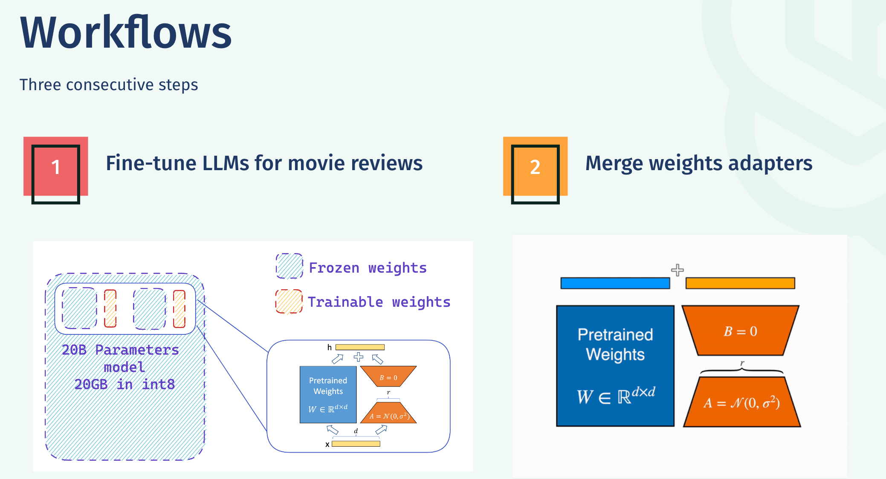
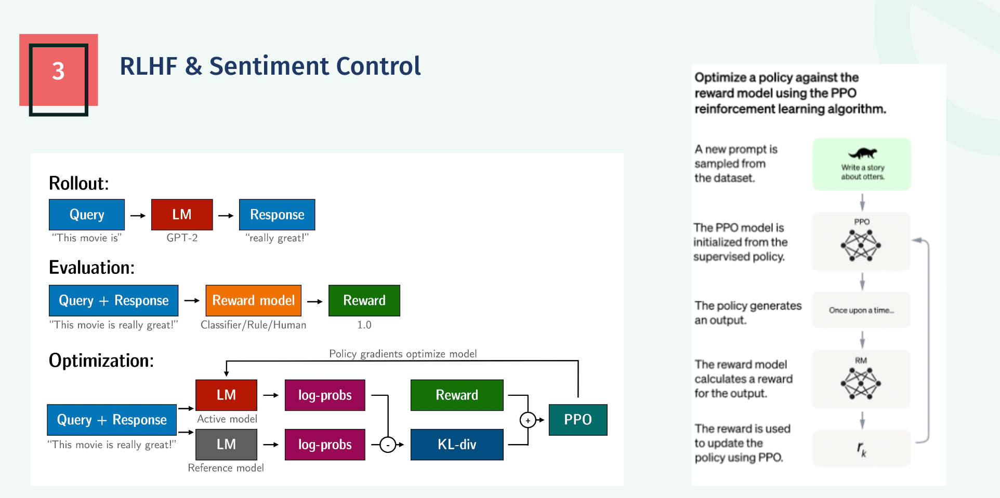
Explore the datasets, models, and training logs
We explored GPT-NeoX-20B and Pythia variants from 70M to 12B for movie reviews, alongside LLaMA / Vicuna for programming Q&A. Training configurations differed across experiments.
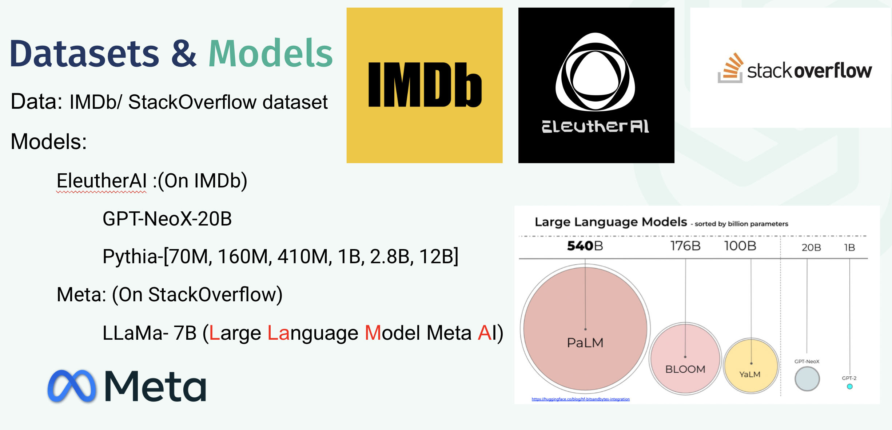
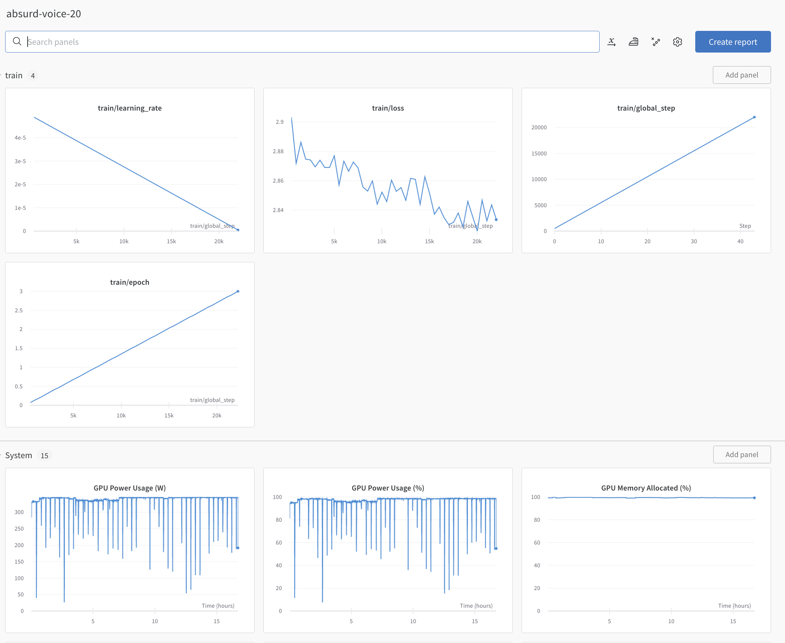
The engineering constraint
Make limited GPU memory go further.
Memory shaped the model choice, training configuration, and reinforcement-learning setup.
A constraint across the experiments- 8-bit model loading
- Reduce the memory needed to store pretrained weights.
- Low-rank adapters
- Train a small set of additional parameters while keeping the base model frozen.
- Mixed precision & gradient accumulation
- Use smaller numerical formats and build an effective batch over several smaller steps.
- Gradient checkpointing
- Recompute intermediate activations during backpropagation to reduce stored activations.
The project explored both reference-model and no-reference PPO configurations. Their memory use and reward scores should be read together with the setup, rather than treated as directly equivalent runs.
View the original hardware and model-size challenges
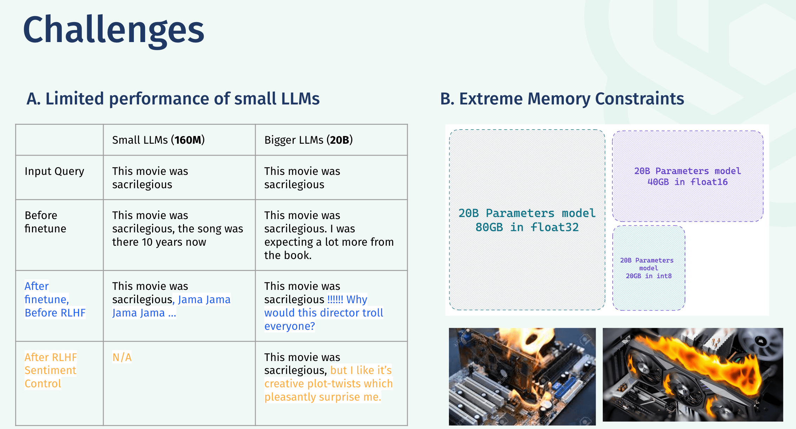
The evidence
See what changed after training.
Explore the recorded outputs and results from the two project tracks.
A measurable shift in review sentiment.
Median sentiment reward · values from the original results
Compare the generated text
Recorded excerpts from the original experiment.
Prompt I chose to see
I chose to see this movie nearly alone, which is a
Sentiment reward −1.165
I chose to see this movie which is a celebration of
Sentiment reward 1.515
The excerpts show a shift toward positive language. Reward scores measure the sentiment objective, not factual accuracy or overall writing quality.
View the original GPT-NeoX results and generated outputs
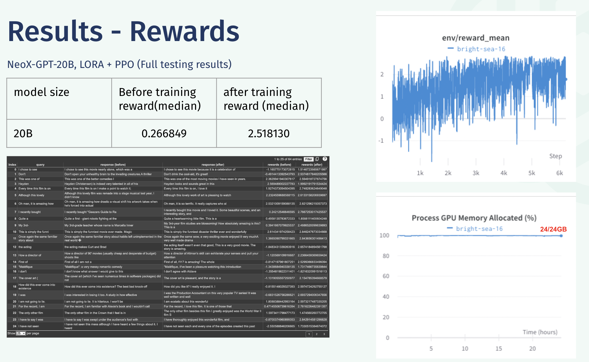
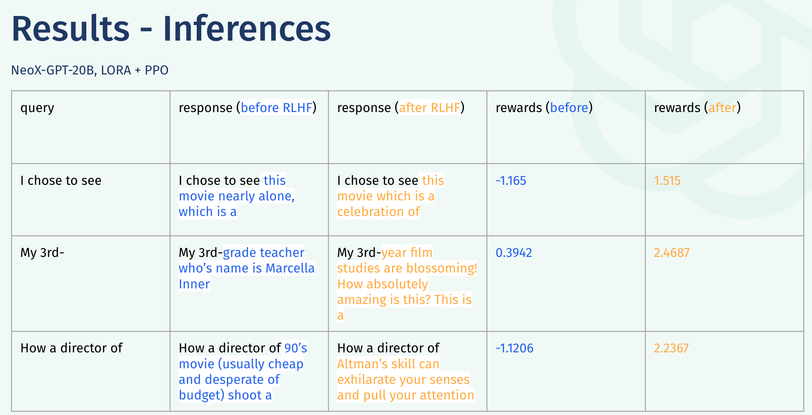
Compare the Pythia model-size experiments
Smaller models did not respond equally well to the reward signal. The 70M run failed, and the 160M run showed little improvement. Larger configurations demonstrated stronger sentiment steering, with different memory requirements and reference-model choices.
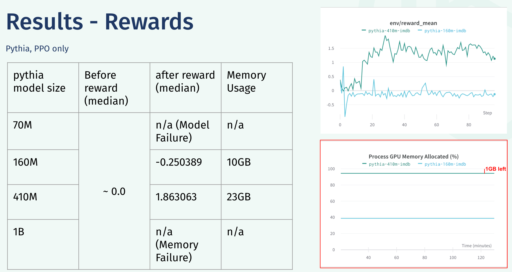
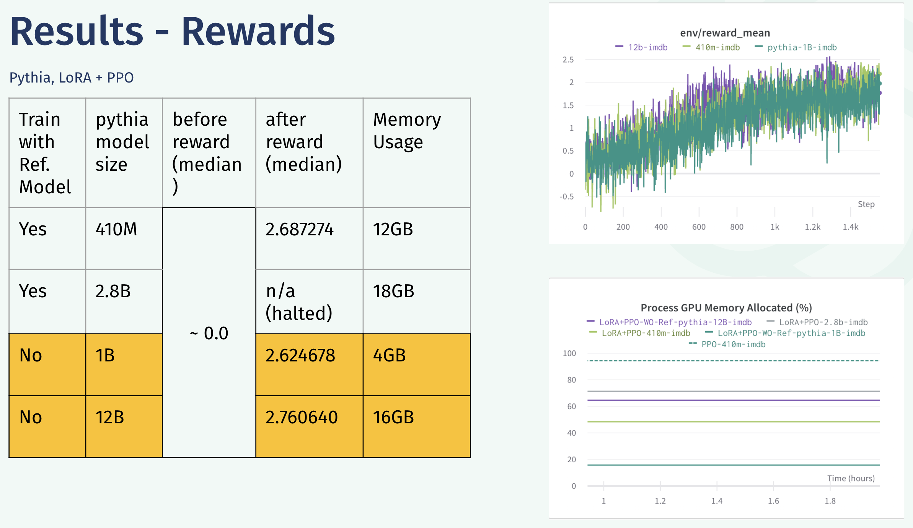
Task adaptation helped. Reward design remained difficult.
Our fine-tuned Vicuna-SE model showed a modest improvement over the original Vicuna and stronger results than the Pythia baseline in the project evaluation. GPT-3.5 remained the stronger comparison model.
The Q&A work reached reward-model exploration; it did not complete the PPO stage. A programming answer needs to be correct and useful, which is harder to reward than positive sentiment alone.
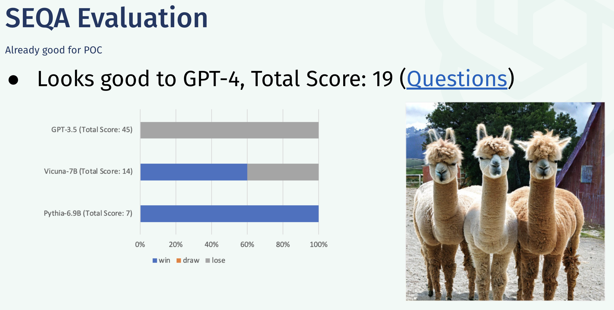
The original slide reports a proof-of-concept comparison using GPT-4 as an evaluator. It is a project-specific result, not a general coding benchmark.
What I took forward
Training decisions need evidence behind them.
Optimize for a clear objective
The movie-review task connected a concrete reward signal to a visible change in output. The next step would be to evaluate fluency and diversity alongside sentiment.
Design around real constraints
Model size, quantization, adapters, and PPO configuration all affected feasibility. The smallest model was not automatically the most useful choice.
Measure what the application needs
The Q&A track exposed the limits of a simple reward. Code execution, correctness checks, and human review would strengthen a future evaluation.
From fine-tuning experiments to enterprise AI.
This project developed the foundations for my later work on customer-support models, retrieval systems, and scalable inference at Lenovo.